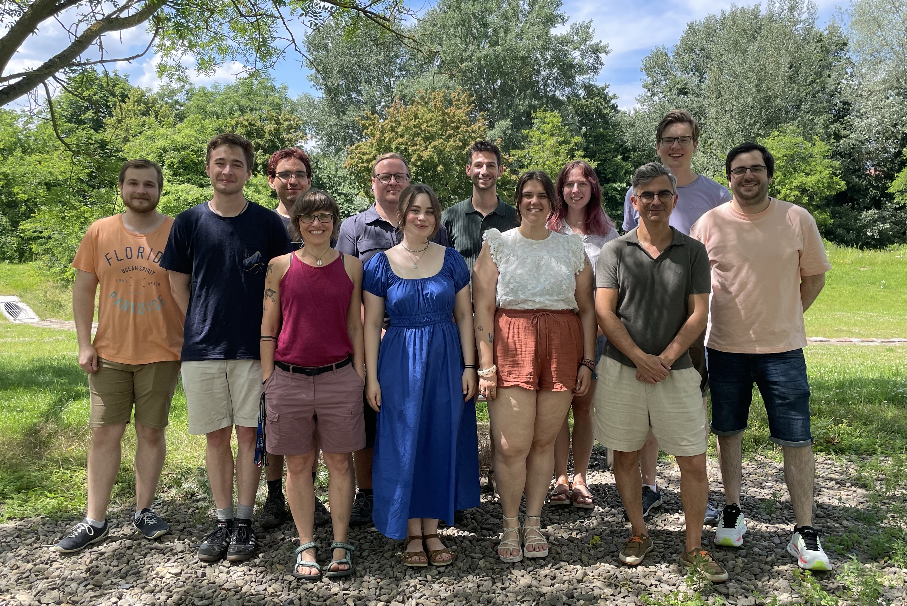

Computerchemie und Biochemie
Quantum chemistry and computational biochemistry at the University of Göttingen
Explore our ResearchWelcome to the website of the Computational Chemistry and Biochemistry group at the Georg-August-Universität Göttingen, Institut für Physikalische Chemie. Our group develops and applies quantum chemical methods to investigate chemical reactivity and biomolecular processes.
We work at the interface of method development and application, with particular focus on local correlation methods, QM/MM approaches for enzymatic systems, and the accurate description of non-covalent interactions. A central theme is the use of high-level wavefunction theory to achieve quantitative accuracy in the study of complex chemical systems.
Our group is part of the Institut für Physikalische Chemie and collaborates closely with experimental groups in Göttingen and internationally.
Research Highlights
- qmbench / GöBench: We coordinate benchmark efforts for numerical quantum chemistry, including the qmbench initiative and participation in the HyDRA blind challenge for computational vibrational spectroscopy.
- BENCh RTG2455: Prof. Mata is a principal investigator in the BENCh Research Training Group (RTG 2455), which focuses on benchmark experiments for numerical quantum chemistry.
- SFB 1633: The group participates in collaborative research on reactive intermediates and reaction mechanisms (SFB 1633).